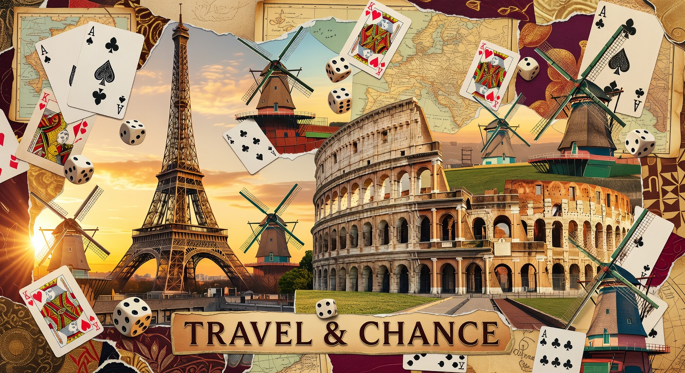
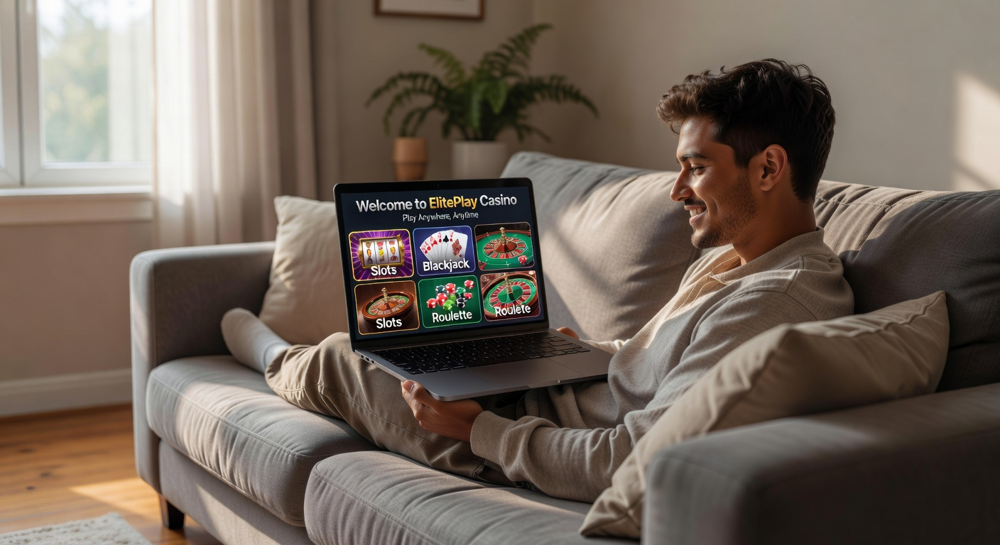
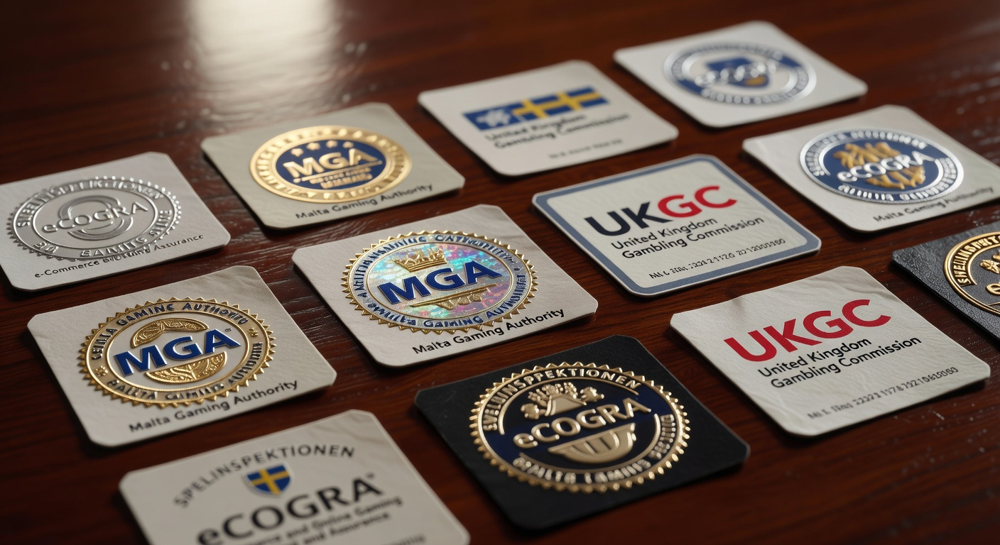
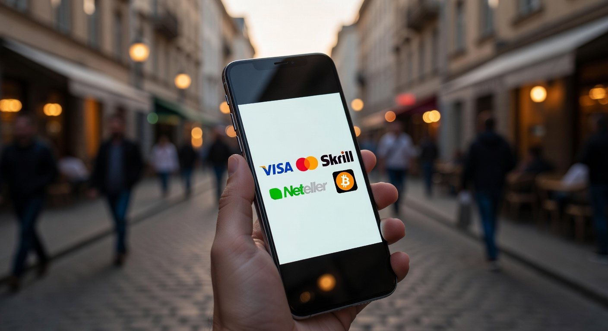
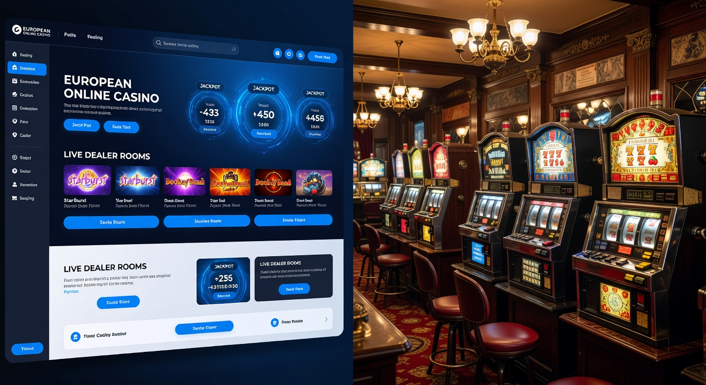

Europese goksites: De beste online casino’s in Europa van 2026
De wereld van online kansspelen is in 2026 dynamischer dan ooit tevoren. Voor Nederlandse spelers is de keuze tussen lokale aanbieders en internationale platforms een belangrijk onderdeel geworden van hun speelervaring. Europese goksites spelen hierbij een cruciale rol. Deze platforms, die vaak opereren onder prestigieuze vergunningen uit landen als Malta of Estland, bieden een alternatief voor de strikt gereguleerde Nederlandse markt. In dit uitgebreide artikel duiken we diep in de wereld van deze aanbieders, waarbij we kijken naar veiligheid, spelaanbod en de unieke voordelen die zij bieden in het huidige jaar 2026.
Goldbet Casino
★★★★★ 5.0Welkomstbonus tot €500
Newlucky Casino
★★★★★ 4.8100% bonus op eerste storting
Dragobet Casino
★★★★★ 4.7Exclusieve bonus tot €1000
Fortunicabet Casino
★★★★★ 4.5200% bonus + 50 gratis spins
Spinorhino Casino
★★★★★ 4.4Welkomstbonus 150% tot €300
Lizaro Casino
★★★★★ 4.3100% tot €500 + 100 free spins
Het landschap is aanzienlijk veranderd sinds de eerste regulering. Terwijl de Nederlandse Kansspelautoriteit (Ksa) de regels voor binnenlandse exploitanten steeds verder heeft aangescherpt, zijn veel gerenommeerde Europese goksites erin geslaagd een balans te vinden tussen strikte spelersbescherming en een superieure gebruikerservaring. Dit heeft geleid tot een groeiende interesse van ervaren gokkers die op zoek zijn naar hogere limieten, diversere bonussen en een breder scala aan innovatieve casinospellen.
Wanneer we spreken over Europese goksites, hebben we het over platforms die hun basis hebben binnen de Europese Unie of de Europese Economische Ruimte. Deze sites moeten voldoen aan strenge EU-richtlijnen op het gebied van privacy, gegevensbeveiliging en anti-witwaspraktijken. Dit zorgt voor een vertrouwde omgeving waarin Nederlandse spelers met een gerust hart een gokje kunnen wagen, mits zij de juiste aanbieders selecteren die bewezen hebben betrouwbaar te zijn.
Wat zijn Europese goksites precies?
Europese goksites zijn online platforms die kansspelen aanbieden en gelicentieerd zijn in een lidstaat van de Europese Unie. Hoewel elk land zijn eigen specifieke regelgeving kan hebben, vallen deze aanbieders onder de overkoepelende Europese wetgeving die vrij verkeer van diensten promoot. In de praktijk betekent dit dat een online casino gevestigd in Malta legaal diensten kan aanbieden aan burgers in de hele EU, mits zij voldoen aan lokale en internationale standaarden.
Deze platforms onderscheiden zich vaak door hun internationale karakter. Waar een Nederlandse aanbieder zich specifiek richt op de lokale markt met iDIN en strikte Cruks-integratie, hanteren Europese goksites vaak een bredere benadering. Ze bieden ondersteuning in meerdere talen, accepteren diverse valuta en werken samen met een gigantisch netwerk van softwareleveranciers. Dit maakt de ervaring vaak rijker en gevarieerder dan bij een puur lokale aanbieder.
In 2026 zien we dat deze sites steeds vaker gebruikmaken van geavanceerde technologieën zoals kunstmatige intelligentie om speelpatronen te monitoren. Hoewel ze niet direct aangesloten zijn op het Centraal Register Uitsluiting Kansspelen (Cruks), implementeren de beste Europese goksites hun eigen robuuste systemen voor verantwoord spelen. Dit omvat zelfuitsluitingstools, stortingslimieten en realiteitstests die net zo effectief kunnen zijn als de nationale systemen, maar met meer flexibiliteit voor de eindgebruiker.
Top 10 beste Europese goksites voor Nederlandse spelers

Het selecteren van de juiste plek om te spelen is essentieel voor een veilige ervaring. Onze experts hebben de markt in 2026 geanalyseerd en een lijst samengesteld van de meest betrouwbare platforms. Deze Europese goksites blinken uit in klantenservice, snelheid van uitbetaling en de kwaliteit van hun spelaanbod. Hieronder vindt u een overzicht van de top 10 aanbieders die momenteel de markt domineren.
| Casino Merk | Licentie | Welkomstbonus | Uniek Kenmerk |
|---|---|---|---|
| SpinTexas | MGA (Malta) | 100% tot €500 + 200 Free Spins | Snelste uitbetalingen in 2026 |
| TonyBet | EMTA (Estland) | €120 Bonus + 120 Gratis Spins | Uitstekend sportsbook aanbod |
| Unibet | MGA / Diverse EU | Gepersonaliseerde bonussen | Grootste community van Europa |
| Casino 777 | België / MGA | Wisselende promoties | Grote focus op live dealer games |
| ComeOn! | MGA | 100% Match Bonus | Zeer gebruiksvriendelijke mobiele app |
| Circus Casino | België / MGA | Loyaliteitspunten systeem | Uniek gamification element |
| Kansino | MGA (International) | Geen bonus, focus op snelheid | Geen registratie vereist (Pay N Play) |
| Fair Play Casino | MGA / NL | Tot €250 Bonus | Klassieke gokkasten specialisatie |
| Jack’s Casino Online | MGA / NL | €100 Bonus | Beste VIP-programma |
| Bet365 | Gibraltar / MGA | 50 Gratis Spins | Wereldleider in sportweddenschappen |
Deze lijst bevat zowel pure Europese goksites als merken die ook een lokale Nederlandse licentie hebben verkregen, wat getuigt van hun brede acceptatie en betrouwbaarheid. Het is opvallend dat merken zoals TonyBet en SpinTexas in 2026 hoog scoren vanwege hun innovatieve benadering van crypto-betalingen en bliksemsnelle KYC-processen.
Focus op veiligheid en betrouwbaarheid
Veiligheid is het fundament van elke succesvolle goksite. Bij Europese goksites wordt dit gewaarborgd door strikte audits van onafhankelijke instanties zoals eCOGRA of iTech Labs. Deze organisaties testen de Random Number Generators (RNG) van de spellen om te garanderen dat elke draai aan een gokkast of elke gedeelde kaart volledig willekeurig is. In 2026 is de transparantie hierover alleen maar toegenomen, waarbij veel casino's hun maandelijkse uitbetalingsrapporten publiekelijk delen.
Daarnaast maken deze platforms gebruik van de nieuwste SSL-encryptietechnologie (Secure Socket Layer) om financiële transacties en persoonlijke gegevens te beschermen. Een betrouwbaar online casino zal altijd duidelijk communiceren over hun licentiestatus onderaan de website. Het is voor spelers in 2026 essentieel om te controleren of het licentienummer actief is bij de betreffende autoriteit, zoals de Malta Gaming Authority.
Aanbod van spellen en software providers
Een van de grootste trekpleisters van Europese goksites is de enorme bibliotheek aan spellen. Waar sommige lokale markten beperkingen hebben op bepaalde speltypes, bieden Europese platforms vaak duizenden opties. Dit varieert van klassieke fruitautomaten tot de meest geavanceerde video slots met Megaways-mechanieken. De samenwerking met top-tier providers zoals Pragmatic Play zorgt ervoor dat spelers altijd toegang hebben tot de nieuwste releases en grootste jackpots.
Naast slots is het live casino segment explosief gegroeid. Spelers kunnen in real-time communiceren met professionele dealers in studio's verspreid over heel Europa. Of het nu gaat om Roulette, Blackjack of innovatieve Game Shows zoals "Crazy Time 2026", de ervaring is meeslepend en van hoge kwaliteit. De aanwezigheid van bekende providers garandeert ook een eerlijk spelverloop en een hoge RTP (Return to Player), wat essentieel is voor de winstkansen op de lange termijn.
Waarom kiezen voor een online casino in Europa?

Er zijn verschillende redenen waarom Nederlandse spelers in 2026 de voorkeur geven aan Europese goksites boven puur lokale aanbieders. Ten eerste is er de kwestie van keuzevrijheid. Europese platforms bieden vaak een breder scala aan bonussen zonder de extreem strikte beperkingen die we soms in Nederland zien. Denk hierbij aan hogere stortingsbonussen, meer free spins en loyaliteitsprogramma's die daadwerkelijk waarde toevoegen voor de frequente speler.
Een ander belangrijk aspect is de afwezigheid van bepaalde nationale beperkingen. Veel spelers zoeken naar Online Casinos Zonder Cruks omdat ze de voorkeur geven aan een systeem van eigen verantwoordelijkheid in plaats van een centraal register. Dit betekent niet dat deze spelers onveilig zijn; Europese goksites bieden uitstekende tools voor zelfregulering, maar zonder de bureaucratische rompslomp die soms gepaard gaat met nationale databases.
Bovendien zijn de technologische innovaties op Europese goksites vaak een stap vooruit. In 2026 zien we functies zoals "instant play" zonder account via Pay N Play-technologie, integratie van AI-assistenten voor directe support en de mogelijkheid om te spelen met diverse cryptovaluta. Deze flexibiliteit spreekt een moderne generatie spelers aan die waarde hecht aan snelheid en anonimiteit binnen de wettelijke kaders.
Belangrijkste licenties voor goksites in de EU

Niet alle licenties zijn gelijk geschapen. Wanneer u navigeert door het aanbod van Europese goksites, is het cruciaal om te weten welke autoriteit toezicht houdt. De licentie bepaalt namelijk welke rechten u als speler heeft in geval van een geschil en hoe streng de controle op het casino is. In 2026 blijven de MGA en EMTA de gouden standaard voor Europese operaties.
Naast de bekende namen zijn er ook opkomende markten. Landen zoals Roemenië en Griekenland hebben hun eigen regelgeving versterkt, maar deze zijn vaak meer gericht op hun eigen ingezetenen. Voor de internationale Nederlandse speler blijven de grensoverschrijdende licenties het meest relevant en voordelig qua spelaanbod en bonusvoorwaarden.
Malta Gaming Authority (MGA)
De Malta Gaming Authority is al decennia de belangrijkste regulator in de Europese online gokindustrie. Een MGA-licentie staat synoniem voor betrouwbaarheid en strikt toezicht. Europese goksites met deze vergunning moeten voldoen aan zeer hoge eisen wat betreft kapitaalreserves, spelersbescherming en eerlijkheid van spellen. In 2026 heeft de MGA haar regels verder geëvolueerd om ook moderne aspecten zoals crypto-assets en NFT-gaming te integreren, wat de relevantie van deze licentie behoudt.
Estonian Tax and Customs Board (EMTA)
De Estse licentie is de afgelopen jaren enorm in populariteit gestegen onder Europese goksites. De Estonian Tax and Customs Board staat bekend om zijn efficiënte maar zeer strenge controleproces. Voor spelers biedt een EMTA-casino veel zekerheid, aangezien Estland een van de meest gedigitaliseerde landen ter wereld is, wat resulteert in naadloze verificatieprocessen en veilige data-opslag. Veel top-tier aanbieders kiezen voor deze licentie als een kwaliteitskeurmerk voor hun Europese operaties.
Andere internationale vergunningen
Naast de EU-specifieke licenties opereren veel Europese goksites ook met vergunningen uit gebieden zoals Gibraltar, de Isle of Man, of zelfs buitenlandse jurisdicties zoals Curaçao en Costa Rica. Hoewel Curaçao-licenties vroeger als minder strikt werden beschouwd, hebben zij in 2026 hun regelgeving aanzienlijk aangescherpt om te voldoen aan internationale standaarden. Deze licenties maken het vaak mogelijk voor een online casino om innovatieve betaalmethoden zoals Bitcoin en Ethereum aan te bieden, wat binnen de EU soms nog aan striktere banden ligt.
Betaalmethoden bij buitenlandse aanbieders

Een van de grootste zorgen voor spelers bij het overstappen naar Europese goksites is of zij nog steeds op hun vertrouwde manier kunnen betalen. Gelukkig hebben de meeste grote aanbieders in 2026 hun systemen volledig aangepast aan de behoeften van de internationale markt. Het proces van storten en uitbetalen is eenvoudiger en sneller dan ooit tevoren, met een focus op gebruiksvriendelijkheid en veiligheid.
Het is belangrijk om te onthouden dat de beschikbare betaalmethoden kunnen variëren afhankelijk van de specifieke licentie van de site. Terwijl sommige zich puur richten op traditionele bankmethoden, omarmen andere de toekomst met gedecentraliseerde financiën. Dit geeft de speler in 2026 de ultieme vrijheid om te kiezen voor de methode die het beste past bij hun persoonlijke voorkeuren en privacybehoeften.
Storten met iDEAL of directe bankoverschrijving
Hoewel iDEAL de onbetwiste koning is op de Nederlandse markt, zien we dat veel Europese goksites in 2026 gebruikmaken van alternatieven die exact hetzelfde werken. Dankzij de PSD2-wetgeving in Europa kunnen diensten zoals Trustly, Brite en Klarna directe bankbetalingen faciliteren die net zo veilig en snel zijn als iDEAL. In veel gevallen merkt de speler niet eens een verschil; je kiest simpelweg je eigen bank, logt in en bevestigt de transactie via je mobiele bank-app.
Bovendien is het gebruik van iDIN voor verificatie minder gebruikelijk bij deze aanbieders, wat sommigen als een voordeel zien. In plaats van in te loggen via een bankportaal om je identiteit te bewijzen, maken veel Europese goksites gebruik van snelle document-scantechnologie die je identiteit binnen enkele minuten verifieert zonder directe koppeling met je bankrekening voor andere doeleinden dan de betaling zelf.
E-wallets en cryptovaluta
Voor spelers die extra privacy en snelheid wensen, zijn e-wallets zoals Skrill, Neteller en MuchBetter al jaren standaard bij Europese goksites. In 2026 is de integratie van cryptovaluta echter de grootste trend. Platforms die opereren onder licenties die dit toestaan, bieden de mogelijkheid om direct te storten met Bitcoin, USDT of Litecoin. Dit zorgt voor bijna onmiddellijke uitbetalingen, vaak binnen enkele minuten nadat de winst is behaald, wat een enorm voordeel is ten opzichte van de traditionele bankverwerkingstijden van 1-3 werkdagen.
Europese goksites vergeleken met Nederlandse casino’s

Het vergelijken van deze twee werelden is essentieel om te begrijpen waar de beste kansen liggen. Nederlandse casino's met een Ksa-licentie bieden een zeer hoge mate van lokale bescherming en zijn direct aangesloten op het Centraal Register Uitsluiting Kansspelen. Dit is ideaal voor spelers die behoefte hebben aan een strikt gereguleerd kader. Echter, dit gaat vaak gepaard met beperkingen op het gebied van spelersbonussen en een soms omslachtig registratieproces met DigiD.
Aan de andere kant bieden Europese goksites een meer internationale flair. De bonussen zijn vaak competitiever omdat deze sites op een wereldwijd toneel concurreren. Ook vinden we hier vaker spellen die in Nederland nog niet zijn goedgekeurd of providers die simpelweg de kosten van een lokale licentie niet willen dragen. Voor de ervaren speler die weet hoe hij zijn eigen grenzen moet bewaken, bieden de Europese platforms in 2026 vaak een meer complete en bevredigende ervaring zonder de constante monitoring van de nationale overheid.
Een ander punt van verschil is de limieten. Waar Nederlandse aanbieders steeds vaker verplicht worden om strikte stortingslimieten op te leggen aan alle spelers, bieden Europese goksites meer ruimte voor persoonlijke afspraken en hogere limieten voor high rollers. Dit maakt deze sites aantrekkelijker voor spelers die met grotere bedragen willen opereren, mits zij kunnen aantonen dat hun bron van inkomsten legitiem is.
Bonussen en promoties die je kunt verwachten
De bonuscultuur is op Europese goksites in 2026 levendiger dan ooit. Vanwege de moordende concurrentie proberen aanbieders elkaar voortdurend te overtreffen met aantrekkelijke deals. Dit is gunstig voor de speler, maar het vereist ook een kritische blik op de bonusvoorwaarden. Een grote bonus is namelijk alleen waardevol als de rondspeelvoorwaarden (wagering requirements) eerlijk en haalbaar zijn.
Naast de standaard welkomstpakketten zien we een trend naar meer gepersonaliseerde beloningen. Door gebruik te maken van data-analyse kunnen Europese goksites aanbiedingen doen die specifiek zijn afgestemd op de favoriete spellen van een speler. Speel je veel live blackjack? Dan krijg je eerder een cashback voor het live casino dan gratis spins voor een gokkast die je nooit opent.
Hoge welkomstbonussen en free spins
Een standaard welkomstbonus bij Europese goksites bestaat in 2026 vaak uit een match-bonus van 100% of zelfs 200% op de eerste storting. Dit wordt bijna altijd vergezeld door een royaal aantal free spins op populaire titels van Pragmatic Play of NetEnt. Het is niet ongewoon om pakketten te zien die verspreid zijn over de eerste drie tot vijf stortingen, waardoor het totale bonusbedrag kan oplopen tot duizenden euro's. Dit is aanzienlijk hoger dan wat men gemiddeld bij een casino in Nederland kan verwachten.
Cashback en loyaliteitsprogramma's
Voor de lange termijn zijn cashback-bonussen vaak veel interessanter. Veel Europese goksites bieden in 2026 wekelijkse cashbacks aan, waarbij je een percentage (meestal tussen de 10% en 20%) van je verliezen terugkrijgt zonder of met zeer lage rondspeelvoorwaarden. Dit verzacht de pijn van een minder fortuinlijke week en houdt het speelplezier erin. Loyaliteitsprogramma's, waarbij je punten spaart voor elke inzet, bieden bovendien extra extraatjes zoals snellere uitbetalingen, een persoonlijke accountmanager en exclusieve uitnodigingen voor evenementen.
Hoe herken je een betrouwbaar platform?
In de jungle van het internet is het essentieel om het kaf van het koren te scheiden. Een betrouwbare europese goksite heeft altijd een aantal herkenbare kenmerken. Ten eerste is er de transparantie over de eigenaar van het casino. Bedrijven die meerdere succesvolle merken exploiteren, hebben een reputatie hoog te houden en zullen minder snel geneigd zijn tot dubieuze praktijken. Zoek naar namen als N1 Interactive of White Hat Gaming onderaan de pagina.
Ten tweede is de kwaliteit van de website zelf een goede indicator. Een professioneel platform in 2026 is volledig geoptimaliseerd voor mobiel gebruik, heeft geen dode links en biedt een duidelijke sectie met algemene voorwaarden. Als de tekst vol staat met vertaalfouten of als de bonusvoorwaarden nergens te vinden zijn, is dat een rode vlag. Vertrouw ook op onafhankelijke reviewsites en forums waar spelers hun ervaringen delen over uitbetalingssnelheden en klantenservice.
Ten slotte is de aanwezigheid van verantwoord spelen tools een absolute must. Zelfs als een site niet verbonden is aan het Centraal Register Uitsluiting Kansspelen, moet een gerenommeerde aanbieder u de mogelijkheid bieden om limieten in te stellen voor stortingen, verliezen en sessieduur. Het ontbreken van deze tools is in 2026 onacceptabel voor elke serieuze Europese goksite.
Mobiel gokken op Europese platforms
In 2026 vindt meer dan 85% van alle online gokactiviteiten plaats op mobiele apparaten. Europese goksites hebben hierop ingespeeld door hun platforms "mobile-first" te ontwikkelen. Dit betekent dat de gebruikerservaring op een smartphone of tablet vaak superieur is aan die op een desktop. Veel aanbieders bieden specifieke apps aan die gedownload kunnen worden, maar de mobiele browserversies zijn tegenwoordig zo geavanceerd dat een app vaak niet eens nodig is.
Dankzij HTML5-technologie draaien alle spellen vloeiend, ongeacht de schermgrootte. Functies zoals biometrisch inloggen (FaceID of vingerafdruk) maken het proces van inloggen en betalen bovendien veiliger en sneller. Voor de Nederlandse speler betekent dit dat hij overal en altijd toegang heeft tot zijn favoriete Europese goksites, of hij nu in de trein zit of op vakantie is in het buitenland.
De kwaliteit van de klantenservice
Wanneer er zich een probleem voordoet, wil je snel en adequaat geholpen worden. Europese goksites blinken in 2026 uit door hun 24/7 bereikbaarheid. De meeste platforms bieden een live chat-functie aan waarbij je binnen enkele seconden verbonden wordt met een medewerker. Hoewel de voertaal vaak Engels is, maken veel sites in 2026 gebruik van geavanceerde real-time vertaalsoftware, waardoor je ook in het Nederlands geholpen kunt worden.
Een goede klantenservice gaat verder dan alleen een chatfunctie. Een uitgebreide FAQ-sectie, telefonische ondersteuning en een snelle respons op e-mails zijn eveneens belangrijk. De beste Europese goksites begrijpen dat hun reputatie valt of staat met de manier waarop zij hun spelers behandelen, vooral wanneer het gaat om complexe vragen over verificatie of uitbetalingen.
Populaire software in Europese online casino's
De spellen die je speelt, worden niet door het casino zelf gemaakt, maar door gespecialiseerde softwareontwikkelaars. In de wereld van Europese goksites zijn er enkele namen die boven de rest uitsteken. Naast de al genoemde Pragmatic Play, zijn ook Evolution Gaming (voor live casino), NetEnt, Play'n GO en Microgaming absolute marktleiders in 2026. Hun spellen staan bekend om hun hoge kwaliteit graphics, innovatieve bonusfeatures en betrouwbaarheid.
Wat Europese goksites zo aantrekkelijk maakt, is de aanwezigheid van kleinere, innovatieve studio's zoals Nolimit City, Hacksaw Gaming en Relax Gaming. Deze providers durven vaak meer risico te nemen met hun spelontwerpen en volatiliteit, wat resulteert in unieke speelervaringen die je niet overal vindt. De mogelijkheid om deze diverse mix van spellen op één platform te vinden, is een groot pluspunt voor de moderne gokker.
Het registratieproces en KYC-procedures
Hoewel veel spelers op zoek zijn naar een soepel proces, ontkomen ook Europese goksites in 2026 niet aan strikte Know Your Customer (KYC) procedures. Dit is een wettelijke vereiste om witwassen te voorkomen en te garanderen dat spelers de wettelijke leeftijd hebben. Het verschil met Nederlandse sites is vaak de methode. Waar in Nederland iDIN en DigiD de standaard zijn, vragen Europese aanbieders vaak om een foto van je ID en een bewijs van adres (zoals een energierekening).
Gelukkig is dit proces in 2026 verregaand geautomatiseerd. Veel sites maken gebruik van AI-gestuurde verificatietools waarbij je documenten binnen enkele minuten worden goedgekeurd. Hierdoor kun je bijna direct beginnen met spelen en, belangrijker nog, zonder vertraging je winsten laten uitbetalen. Het is altijd aan te raden om dit proces direct na registratie te voltooien, zodat je later niet voor verrassingen komt te staan bij je eerste opname.
Verantwoord spelen buiten het Cruks-systeem
Een veelbesproken onderwerp in 2026 is de spelersbescherming. Spelen op Europese goksites betekent dat je niet automatisch beschermd wordt door de Nederlandse zelfuitsluitingslijst. Dit legt een grotere verantwoordelijkheid bij de speler zelf, maar ook bij de aanbieder. De meeste prestigieuze Europese licenties verplichten casino's om proactief gedrag te monitoren en in te grijpen bij tekenen van onverantwoord speelgedrag.
Platforms bieden tools aan zoals een 'reality check', die je elk uur herinnert aan de tijd en het geld dat je hebt uitgegeven. Ook kun je jezelf tijdelijk of permanent uitsluiten van een specifieke site of een netwerk van sites. Voor spelers die extra hulp nodig hebben, zijn er internationale organisaties zoals BeGambleAware of GamCare die ondersteuning bieden, ongeacht op welke site je speelt.
Uitbetalingspercentages en eerlijkheid van spellen
Een cruciaal aspect voor elke gokker is de RTP. Dit percentage geeft aan hoeveel van het ingezette geld op de lange termijn wordt terugbetaald aan de spelers. Europese goksites staan erom bekend dat zij vaak spellen aanbieden met een hogere RTP dan fysieke casino's of sommige strikt gereguleerde markten. In 2026 is het niet ongewoon om slots te vinden met een RTP van 96% tot 98%.
De eerlijkheid van deze percentages wordt gegarandeerd door regelmatige tests door externe bureaus. Bovendien is de transparantie hierover in 2026 enorm toegenomen; bij de meeste spellen kun je met één klik de officiële RTP en de volatiliteit inzien. Dit stelt spelers in staat om weloverwogen keuzes te maken en spellen te selecteren die passen bij hun risicoprofiel en bankroll management.
De toekomst van de Europese gokmarkt in 2026
Kijkend naar de rest van het jaar en daarna, zien we dat de integratie tussen gaming en gokken steeds nauwer wordt. Europese goksites experimenteren met Virtual Reality (VR) casino's waar je met een headset door een digitale speelhal kunt lopen en met andere spelers kunt praten. Ook de opkomst van "social betting", waarbij je de inzetten van succesvolle gokkers kunt volgen en kopiëren, is een trend die in 2026 definitief is doorgebroken.
Daarnaast zal de focus op duurzaamheid en ethisch ondernemen toenemen. We zien dat steeds meer Europese goksites een deel van hun winst doneren aan onderzoek naar gokverslaving of andere maatschappelijke doelen. De markt wordt volwassener, waarbij niet alleen de winst telt, maar ook de impact op de samenleving en het welzijn van de spelers. Dit zorgt voor een gezondere industrie die op de lange termijn houdbaar is.
Sportwedden op Europese goksites
Naast casinospellen zijn veel Europese platforms ook uitgerust met een uitgebreid sportsbook. Voor de Nederlandse sportliefhebber bieden deze sites vaak betere odds en een breder scala aan wedmarkten dan de lokale aanbieders. Of het nu gaat om de Eredivisie, de Champions League of niche sporten zoals padel en e-sports, de keuzemogelijkheden zijn eindeloos. In 2026 is live wedden met geïntegreerde streamingdiensten de standaard geworden, waardoor je de wedstrijd kunt kijken en direct kunt inzetten op hetzelfde scherm.
De flexibiliteit van deze sportsbooks is ook zichtbaar in de 'Bet Builder' functies, waarmee je je eigen unieke weddenschappen kunt samenstellen. Dit, gecombineerd met vroege uitbetalingsopties (cash-out), geeft de speler meer controle over zijn weddenschappen dan ooit tevoren. De Europese goksites blijven hiermee voorloper in het bieden van een complete gokervaring onder één dak.
De ervaring van live dealer games in Europa
Het live casino segment is misschien wel de meest indrukwekkende tak van de industrie in 2026. Dankzij supersnelle 5G- en 6G-verbindingen is de streamkwaliteit altijd in 4K, zonder vertraging. Europese goksites werken samen met studio's die zich bevinden in steden als Riga en Boekarest, waar honderden tafels 24/7 bemand worden door professionele dealers. De sfeer is nagenoeg gelijk aan die van een fysiek casino, maar dan met het comfort van je eigen huis.
Innovaties zoals 'Dual Play' roulette, waarbij online spelers meedoen aan een tafel in een echt fysiek casino, zijn in 2026 razend populair. Ook de interactie is verbeterd; je kunt niet alleen chatten met de dealer, maar soms ook met andere spelers aan de tafel, wat de sociale dimensie van het gokken versterkt. Europese goksites blijven investeren in deze technologie om de grens tussen online en offline steeds verder te laten vervagen.
Conclusie: Is spelen op een Europese goksite de moeite waard?
In 2026 is het antwoord voor veel spelers een volmondig ja. Europese goksites bieden een unieke combinatie van variëteit, vrijheid en technologische innovatie die vaak de lokale markt overstijgt. Met strikte licenties van instanties zoals de MGA en EMTA is de veiligheid gewaarborgd, terwijl de afwezigheid van rigide nationale beperkingen zorgt voor een soepelere en leukere speelervaring. Of je nu komt voor de enorme bonussen, de duizenden spellen van Pragmatic Play, of de snelle crypto-uitbetalingen, er is voor ieder wat wils.
Natuurlijk blijft het essentieel om verantwoord te spelen. Het ontbreken van de automatische koppeling met de Centraal Register Uitsluiting Kansspelen vraagt om een bewuste houding van de speler. Door te kiezen voor gerenommeerde aanbieders en gebruik te maken van de beschikbare zelfreguleringstools, kunnen Nederlandse spelers in 2026 veilig genieten van alles wat de Europese markt te bieden heeft. De wereld van Europese goksites is groter, kleurrijker en spannender dan ooit.
Veelgestelde vragen over Europese goksites
Is het legaal om als Nederlander op een Europese goksite te spelen?
In 2026 is de regelgeving binnen de EU nog steeds gebaseerd op het principe van vrij verkeer van diensten. Hoewel Nederland zijn eigen licentiesysteem heeft, kunnen Nederlanders technisch gezien spelen op elke europese goksite. Het is echter de verantwoordelijkheid van de aanbieder om te voldoen aan de wetgeving van het land waar zij hun diensten aanbieden. Voor u als speler is het vooral belangrijk dat u kiest voor een site die uw veiligheid garandeert via een erkende EU-licentie.
Zijn winsten bij Europese goksites belastingvrij?
In de meeste gevallen moet u in Nederland kansspelbelasting betalen over winsten behaald bij een buitenlands online casino, tenzij de aanbieder al belasting heeft afgedragen in een andere EU-lidstaat en er sprake is van voorkoming van dubbele belasting. Omdat de regels complex kunnen zijn en per 2026 kunnen variëren, is het raadzaam om de website van de Belastingdienst te raadplegen of een expert te vragen voor uw specifieke situatie.
Wat is het voordeel van gokken zonder Cruks?
Het belangrijkste voordeel is de persoonlijke vrijheid. Spelers die niet in het nationale register willen staan, kiezen voor Europese goksites. Dit stelt hen in staat om te spelen zonder dat elke sessie wordt geregistreerd in een centrale database van de overheid. Bovendien zijn de limieten en bonusrestricties vaak minder streng, wat een meer op maat gemaakte speelervaring mogelijk maakt.
Kan ik met iDEAL betalen bij deze aanbieders?
Veel Europese goksites bieden iDEAL-achtige oplossingen aan via intermediairs zoals Trustly of Klarna. Hiermee kunt u direct via uw eigen vertrouwde bankomgeving storten. Hoewel het logo van iDEAL zelf niet altijd aanwezig is, is de techniek erachter vrijwel identiek en even veilig.
Welke licentie is het meest betrouwbaar voor een europese goksite?
In 2026 worden de licenties van de Malta Gaming Authority (MGA) en de Estonian Tax and Customs Board (EMTA) beschouwd als de meest betrouwbare en prestigieuze binnen de Europese Unie. Zij bieden de beste balans tussen strenge controle op de aanbieder en bescherming voor de speler.

Digitale marketeer en contentspecialist met ruim 7 jaar ervaring.